By Melody（2015/08/29）
 点击此处有延伸阅读
点击此处有延伸阅读
移动端查看可扫二维码
玩 API 开发
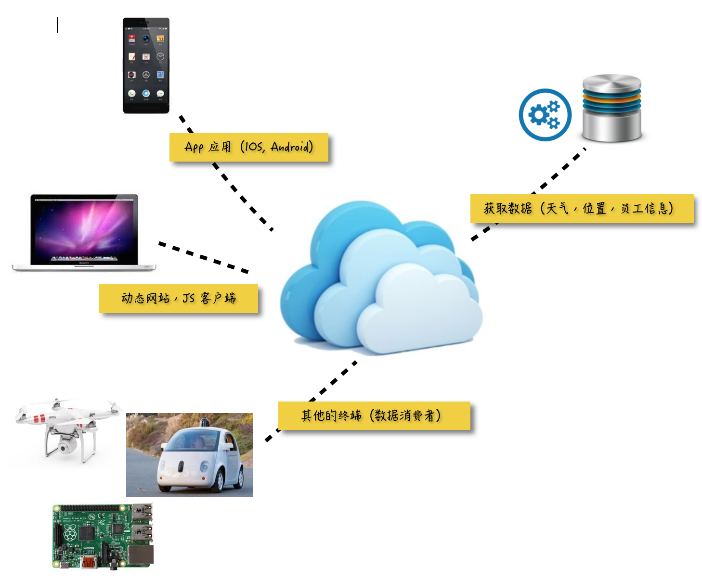
玩 API 开发
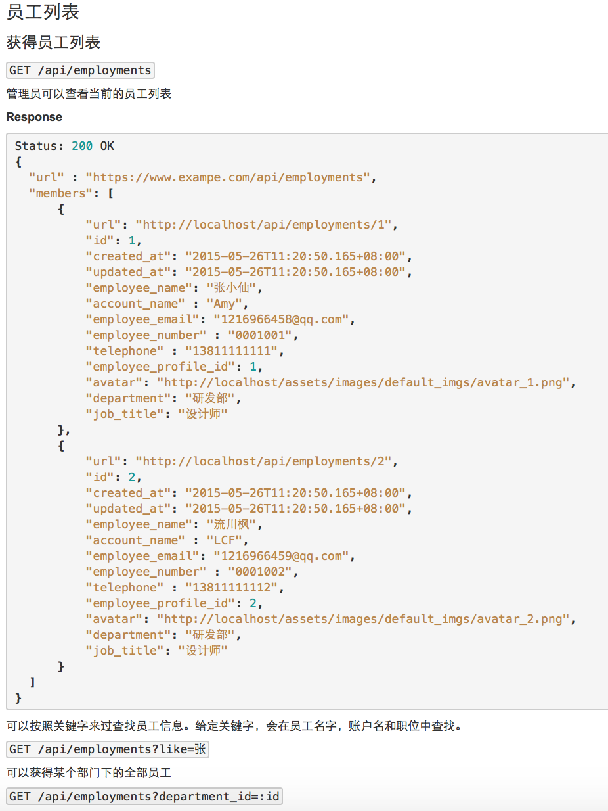
玩 API 开发
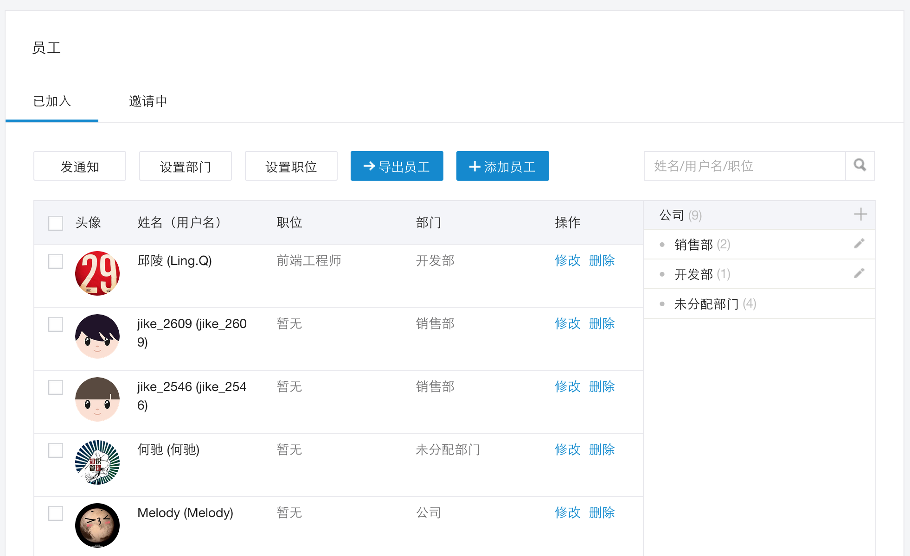
玩 Web 开发
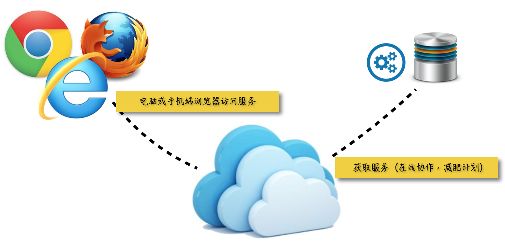
玩 Web 开发（电脑端）
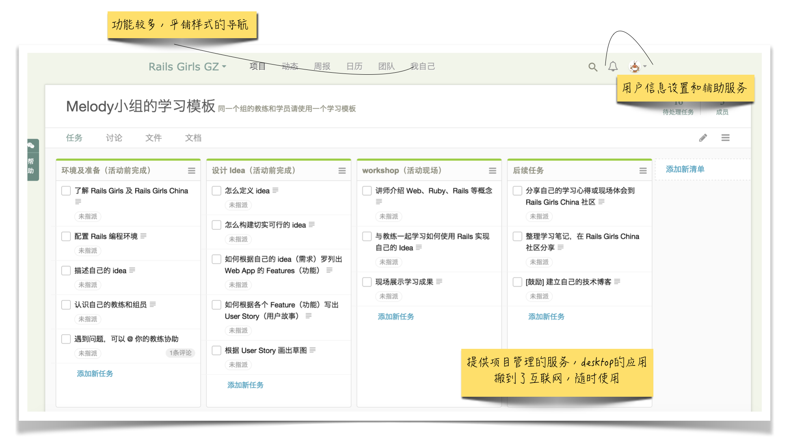
玩 Web 开发（移动端）
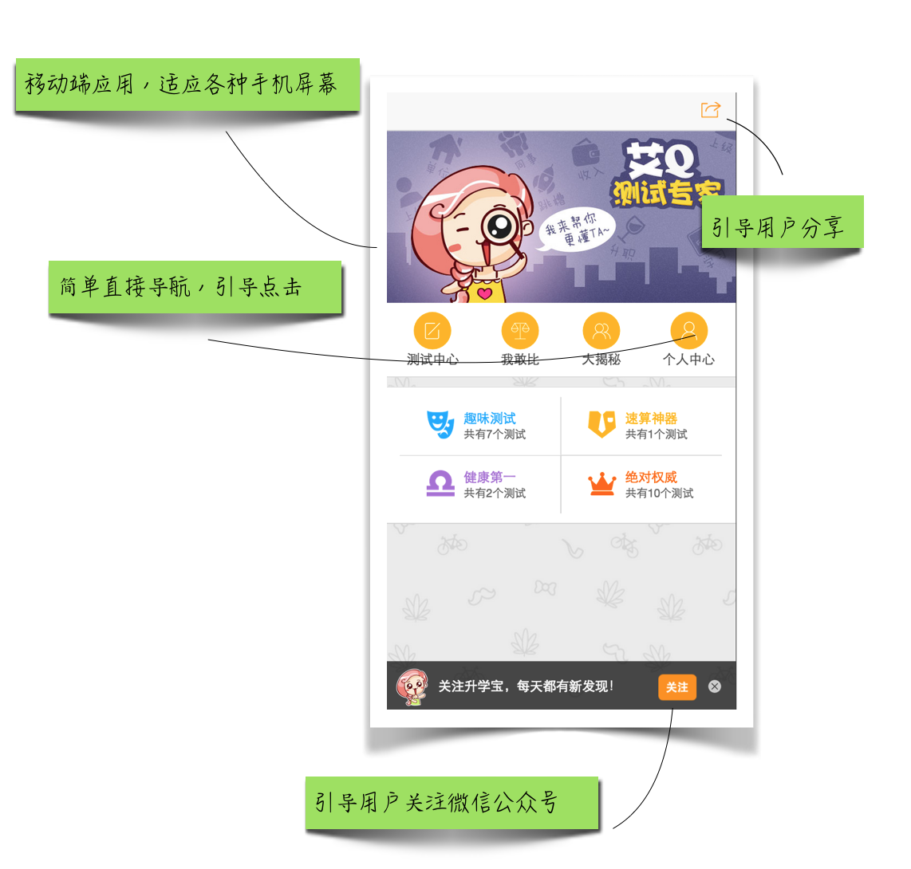
玩 Web 开发（移动端分享传播）
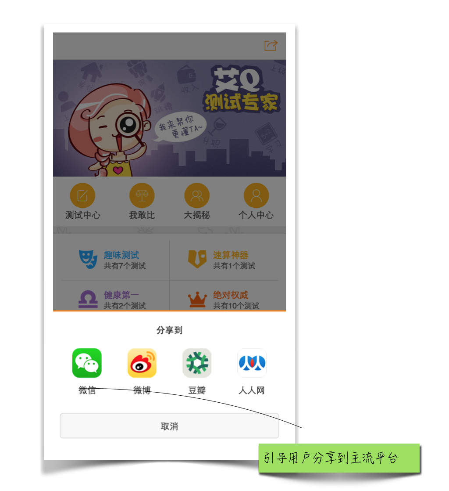
玩 Gem 开发
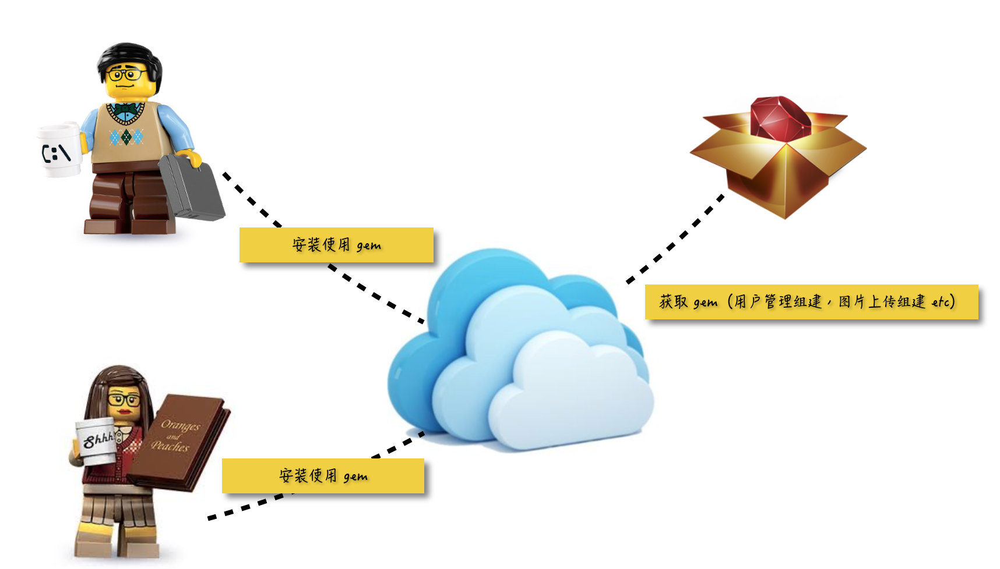
被 Bug 和死线玩（Deadline）
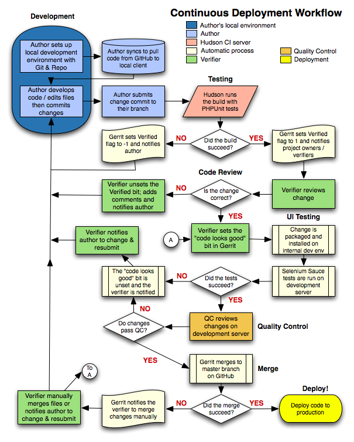
做程序媛一种怎样的体验
- 技术聚会基本沉默但是永远参加
- 写代码太兴奋，生物钟错乱，长痘痘
- 给父母修电脑，安装系统程序刷手机
- 不能忍受一般的礼物，非要亲手做一个选礼物网站给好闺蜜 ～
吾日三省吾身，和自己较劲 💢
如何酿造培养程序媛的团队环境
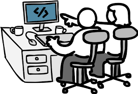
主管意识到男女的不同，懂得调配
如何酿造培养程序媛的团队环境
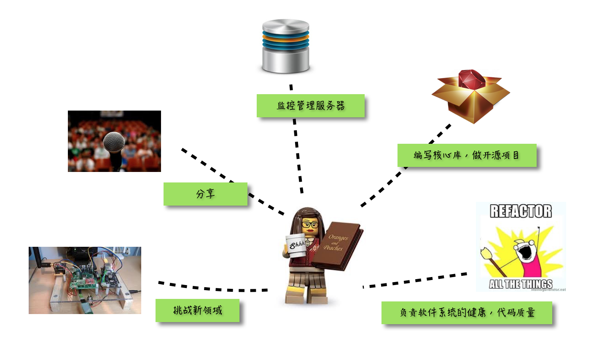
激励女生去担当更核心更多元的开发工作